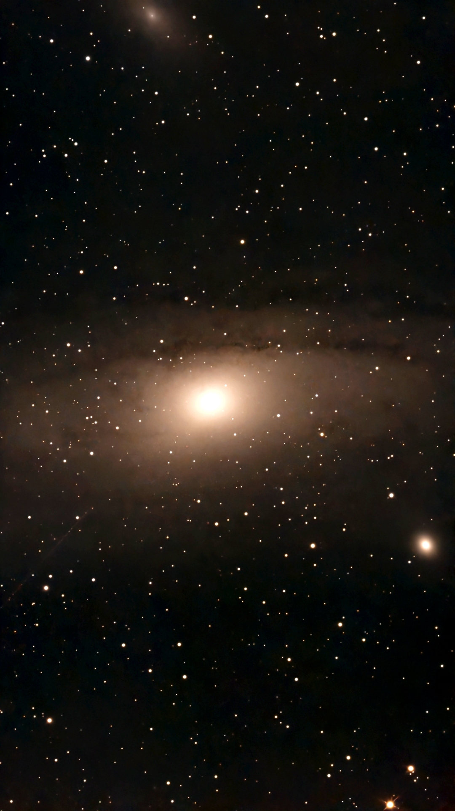

Life Outside Work
Astrophotography _ The Creative Mind
There is a hidden universe out there that our eyes simply aren't built to see. For a long time, I used a traditional telescope, but looking through a glass eyepiece always left me craving more than just faint, gray smudges. I wanted to reveal the vibrant colors and structures buried in the deep dark. Switching to a Seestar S50 smart telescope changed everything for me—it acts as a digital bridge, stacking light over time to unveil the breathtaking nebulae and galaxies that were always right there, completely invisible to the naked eye.



Running Beyond the Obstacles _ The Iron Will
My competitive path began seven years ago in 2019, pacing a 3.5K run as a dedicated fundraiser for HOSPICE Casa Speranței. Shortly after, my training parameters shifted; the pandemic arrived, leading me to focus entirely on weight and strength training. This was followed by a beautiful chapter where my universe completely gravitated around my little one.Last year, something reignited in me. I laced up my running shoes again, locked in a comprehensive racing planner, and signed up for a series of spring competitions. Even when an unexpected injury hit, I didn't abort the mission. I started rehab and kept racing through the pain and discomfort, relentlessly chasing down new personal bests. Despite a recent setback causing another injury, my sights remain firmly locked on the ultimate objective: my first full marathon this fall.
Fundraising & NGO Support _ The Purpose
When I returned to training, running took on a much deeper meaning than just personal records; it became a vehicle for real-world impact. This spring, I registered as an official fundraiser for HOSPICE Casa Speranței to support their mission of building a dedicated hospital for children with cancer. Their incredible work offering palliative care and bringing comfort to families is very close to my heart, and I deeply admire their unwavering dedication to their beneficiaries. Another cause that lives rent-free in my heart is the Fundația Renașterea. Over the years, I have donated my hair multiple times to support their program providing free wigs for women undergoing cancer treatments. This year, I proudly brought my running shoes into the mix for them as well, competing in their annual Race for the Cure event to help champion women's health.